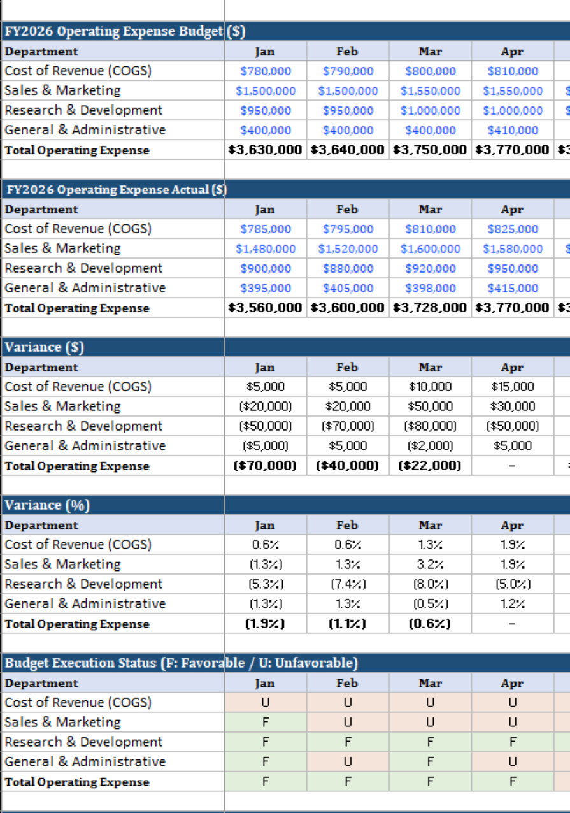
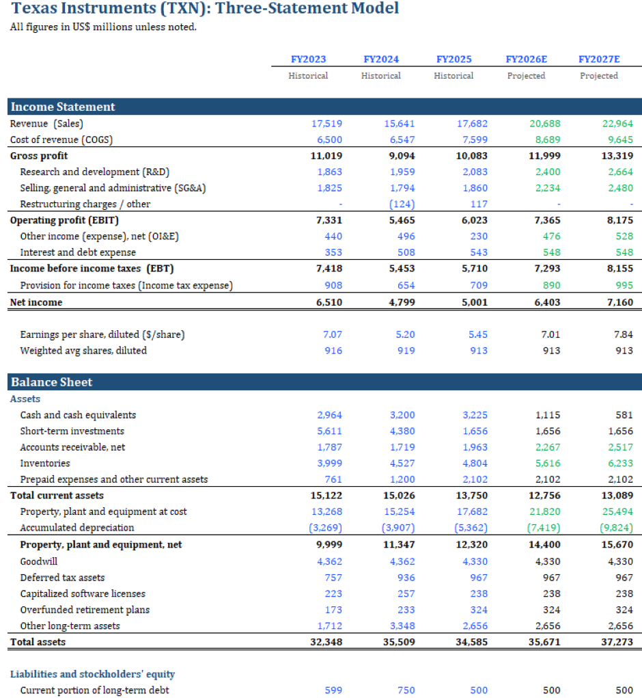
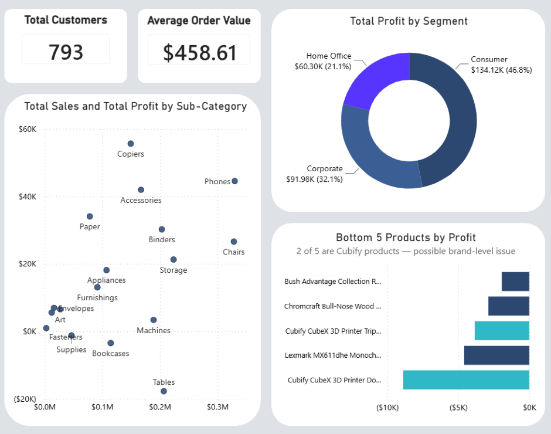
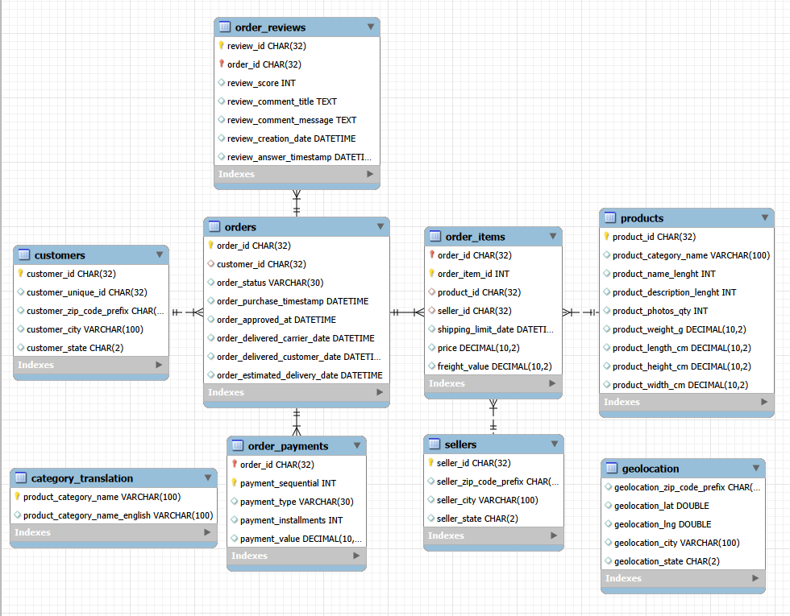

Jin-Tang Shen (Tom)
I build financial models, dashboards, and analytics.
MSF · University of Arizona · Excel · Power BI · SQL
Why Financial Analysis?
I've seen what happens when a business has it, and when it doesn't.
My family ran a café in Taiwan, and I helped manage operations for a stretch. That's where I first understood what financial visibility really means. Not as a concept, but as the difference between catching a cost problem early and missing it entirely. Budget vs. actual, variance by cost center, month-end commentary: I didn't learn why FP&A matters from a textbook. I learned it from watching what happens without it.
That experience is why I wanted to formalize the skill, not just rely on instinct. When I came to the U.S. to pursue my MSF at the University of Arizona, I made a rule: learn by building, not just studying. That habit didn't stay inside finance. Whenever I found a gap, I built a solution, from an automated job search tracker and a market monitor to this portfolio. Using AI as a development partner, I've learned to reach for the right tools to solve the problems in front of me.
That's why I chose financial analysis: not for the numbers, but for the visibility they give a business.
I model, query, and visualize financial data.
Financial modeling, valuation & variance analysis
Querying & structuring relational data
Interactive dashboards & DAX-driven KPI analysis
A growing collection of financial analysis projects, each one built to solve a real finance problem.

Corporate Expense Variance Analysis (BvA)
A 12-month, department-level Budget vs. Actual tracker for a fictional B2B SaaS company. It covers four cost centers, automated variance calculations, status indicators, and a dashboard with KPI cards and three charts.
View Case Study →
TXN Three-Statement Model & DCF Valuation
A driver-based three-statement model and unlevered DCF valuation of Texas Instruments (TXN), built from 10-K historical data (FY2023–FY2025) with a five-year forecast to FY2030. Intrinsic value falls below current market price across the full sensitivity range.
View Case Study →
Retail Financial Performance Analytics
An executive dashboard built in Power BI Desktop from the Sample Superstore dataset, using a star schema with one fact table and four dimension tables, plus DAX time-intelligence measures for year-over-year comparisons.
View Case Study →
Olist Brazilian E-Commerce SQL Analysis
A business-focused MySQL case study covering revenue performance, concentration risk, delivery performance, and customer experience.
View Case Study →Like what you see?
Take a closer look at the full resume, or reach out directly.
From the Articles
Insights on financial modeling, corporate strategy, and valuation.
A High ROE Can Hide Two Very Different Companies
Two companies, same ROE. One earns it through profitability and efficiency. The other borrows its way there.
The Three Statements Tell You When You Are Wrong
The three statements are not three separate documents. They are a closed system that checks your work.
A Company Can Be Profitable and Still Go Broke
Profit and cash are not the same thing. A company can report growing profit year after year and still run out of money.
Why I Am Learning SQL, and How
I already had Excel and Power BI. SQL kept showing up in job postings as the skill I was missing, so I mapped out a learning path and started working through it.
What the Cash Balance Hides: How Texas Instruments Actually Funded Its Fab Expansion
A three-statement model surfaced something the income statement alone never shows.
Let's talk.
Reach out directly or connect on LinkedIn.